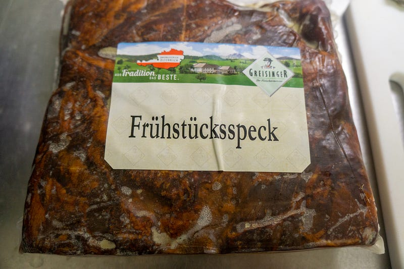
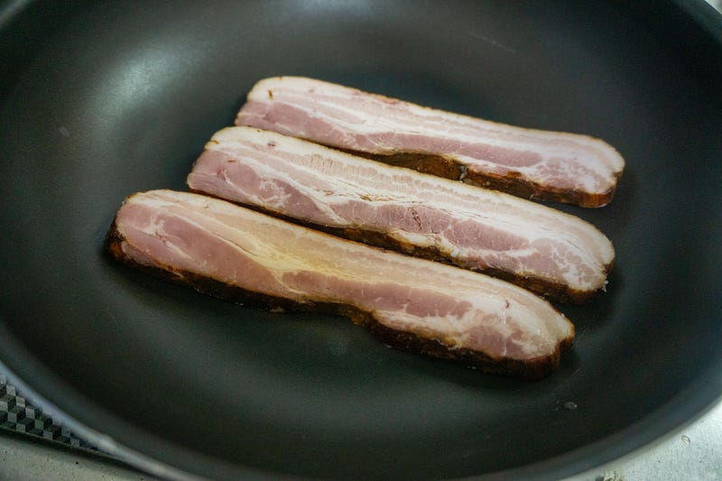
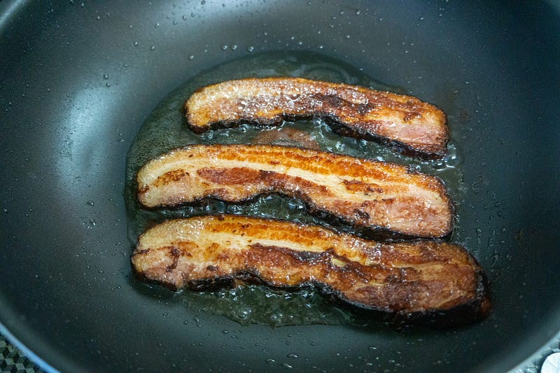
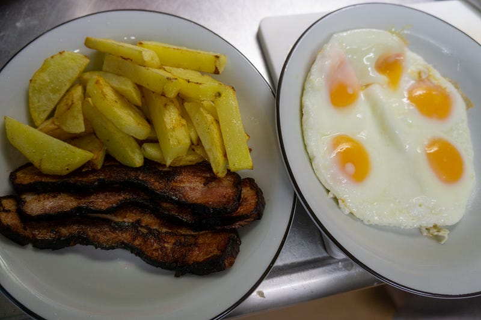

厚切りベーコンでアメリカンブレクファースト
厚切りベーコンでアメリカンブレクファースト
唐突にベーコンの塊を買った。塊ベーコンは正義。

これなら厚さを自由にできる！ベーコンを厚切りにして朝食だ！

厚さ1cm弱。ぐふふ。

思っていたより糖分の多い（外側のグレーズ部分）ベーコンだったので結構焦げてしまったが、まぁOK。
すごい油なので、こいつでジャガイモをやる。ジャガイモはよさげな大きさにしておいて、レンジで6分。焦げ目をつけて終了。あとは家族分の目玉焼きを作る。

よし、これにパンケーキつけたらアメリカで出てきそう！パンケーキは面倒だからやらないけど！食パンを少量追加してぱくぱく食べた。
このベーコン、結構塩味が薄いので、もう少し厚くして量を増やしてもよかった。明日？の朝食はもう少し厚めのベーコンにしてポテトの量を減らす。